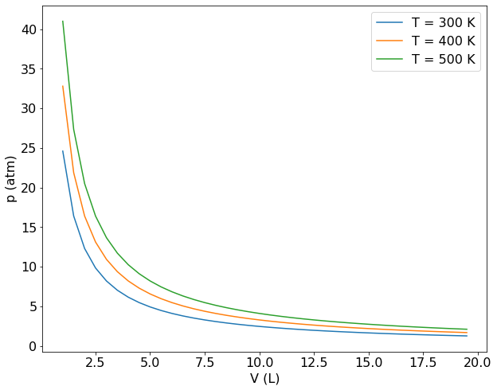
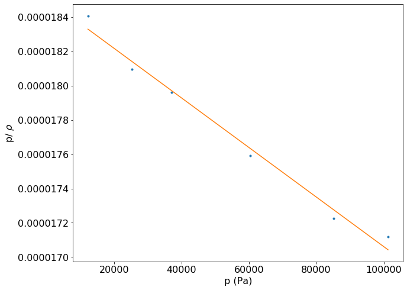
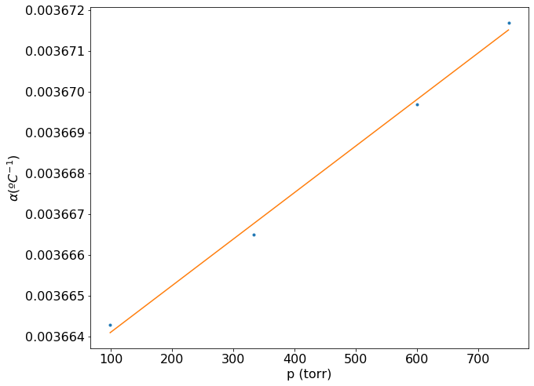
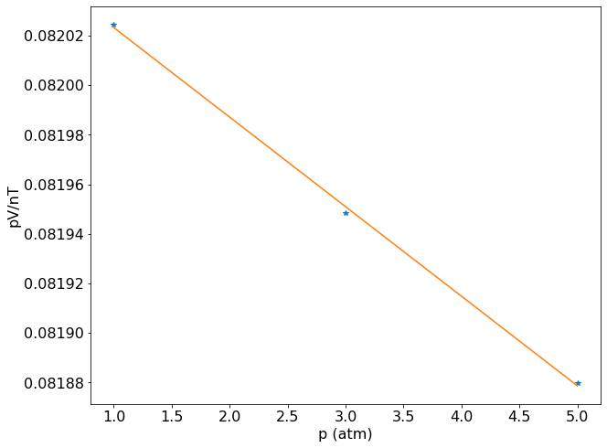

Gás Ideal#
Fundamentos teóricos#
Dos estados de agregação conhecido, o estado gasoso é o mais simples e permite uma descrição quantitativa simples. A forma como descrevemos de forma quantitativa o estado de um gás é por meio de uma equação de estado. A equação de estado do sistema é a relação matemática entre os valores que descrevem o estado do sistema. O gás ideal é descrito pela equação \(pV = nRT\). Sendo R a constante universal dos gases (8,314 J/K mol em unidades S.I.), p é a pressão (informada em Pascal, Pa), V o volume do sistema informado em \(m^3\), T a temperatura informada na escala Kelvin (K) e n a quantidade de matéria expressa em mol.
Como R é uma constante, se soubermos valor de três propriedades, é possível calcular o valor da quarta. Esta equação resume em si diversas propriedades empíricas conhecidas dos gases:
A Lei de Boyle, que mostra a pressão é inversamente proporcional ao volume, desde que a quantidade de matéria e temperatura sejam mantidas constantes.
\( pV = cte \) T e n = cte
A Lei de Charles, que mostra que um gás a p e n constantes o volume é diretamente proporcional a temperatura.
\( V \propto T \) p e n = cte
O princípio de Avogadro, que diz que volumes iguais de gases distintos apresentam o mesma quantidade de matéria.
A equação do gás ideal pode ser aplicada para o estudo das transformações de estado de um gás (compressões, aquecimentos etc) ou para descrição da mistura de gases ideais. Caso dois gases distintos sejam encerrados em um mesmo recipiente (gases A e B), ambos ocuparão todo o volume do sistema, mas não irão interagir entre si de forma que a pressão exercida por cada gás é denominada de pressão parcial, e a pressão total é dada pelo somatório das pressões parciais, \(p_{total} = p_A + p_B\). Sendo \(p_i\) a pressão parcial dos gases A e B.
Ainda é possível relacionar a composição do sistema, informada em fração molar (\(x\)), com a pressão total. Esta relação é denominada de Lei de Dalton:
Para a resolução dos exercíos faremos uso das bibliotecas Numpy e Matplolib.
#bibliotecas necessárias para resolução de exercícios
import numpy as np
import matplotlib.pyplot as plt
---------------------------------------------------------------------------
ModuleNotFoundError Traceback (most recent call last)
Cell In[1], line 2
1 #bibliotecas necessárias para resolução de exercícios
----> 2 import numpy as np
3 import matplotlib.pyplot as plt
ModuleNotFoundError: No module named 'numpy'
Exemplo 1: Verificação da Lei de Boyle#
Construa um gráfico de pressão versus volume para uma gás que obedece a equação de estado do gás ideal e mostre que este gás segue a Lei de Boyle.
Solução#
Como a Lei deve ser válida para qualquer gás, consideraremos 1 mol de um gás ideal e calcularemos a pressão para um intervalo de valores de volume. Incialmente será criado um vetor contendo o intevalo de volumes desejados com a função numpy.arange(). Depois, para cada valor de volume será calculado a pressão segundo a equação do gás ideal. O procedimento será repetido para três temperatura distintas e finalmente os valores de p versus V será plotado usando o matplotlib.
# Criando o intervalo de volumes em litros. Começando em 1 L e finalizando em 20 L
V = np.arange(1,20,0.5)
R = 0.082 # atm L /K mol
#Os valores de pressão serão calculados em atm para 3 valores de temperatura.
p1 = R*300/V
p2 = R*400/V
p3 = R*500/V
# Criando os gráficos
# estes dois parâmetros precisam aparecer antes da definição do plot
plt.rcParams.update({'font.size': 16}) #define o tamanho da fonte
plt.figure(figsize=(10,8)) #define as dimensões do gráfico
plt.plot(V, p1, "-", label='T = 300 K')
plt.plot(V, p2, "-", label='T = 400 K')
plt.plot(V, p3, "-", label='T = 500 K')
plt.ylabel('p (atm)')
plt.xlabel('V (L)')
plt.legend(loc='best')
plt.show()

As curvas obtidas são as chamadas isotermas do gás ideal. Elas mostram que a pressão é inversamente proporcional ao volume, como definido pela Lei de Boyle. A medida que a temperatura se eleva as isotermas se deslocam para valores mais elevados de pressão e volume.
Exemplo 2: Aplicação da equação de estado do gás ideal#
Nitrogênio é aquecido a 500 K num vaso com volume constante. Se o gás entra no vaso a uma pressão de 100 atm e a 300 K. Qual sua pressão na temperatura de trabalho, se seu comportamento for de um gas ideal?
Solução#
Podemos escrever a equação do gás ideal como: \( \frac{pV}{T} = nR \). Se a quantidade de materia do sistema for mantida constante, teremos:
Como o a transformação ocorre a volume constante: \( \frac{p_1 }{T_1} = \frac{p_2 }{T_2}\)
#Definindo variáveis
T1 = 300 #K
T2 = 500 #K
P1 = 100 #atm
# Como não foi pedido que a resposta tenha uam unidade específica,
# não é preciso mudar a unidade da pressão para Pa.
p2= (P1*T2) / T1
print('Pressão (atm) = ' + format(p2,'6.4f'))
Pressão (atm) = 166.6667
Note que a pressão aumenta a medida que a temperatura aumenta, assim como esperado para o valor do volume. Logo, tanto o volume quanto pressão aumentam a medida que temperatura aumenta.
Exemplo 3: Aplicação da Lei de Dalton#
Sabendo que o ar seco possui composição ponderal de 75,5% de \(N_2\), 1,3% de Ar, 23,2% de \(O_2\), calcule a pressão parcial de cada componente quando a pressão total for 1,20 atm.
Solução#
A composição centesimal informada está em base molar, logo, basta converter esta composição em fração molar e aplicar a Lei de Dalton. Como a pressão total foi informada em atm e a fração molar é uma grandeza adimensional, o resultado será expresso em atm.
#Definindo Variáveis
#Fração molar não depende da massa total da amostra.
x_N2 = 0.755
x_O2 = 0.232
x_Ar = 0.013
pTotal = 1.20 #atm
# Cálculo da pressão parcial usando a Lei de Dalton
pN2 = x_N2 * pTotal
pO2 = x_O2 * pTotal
pAr = x_Ar * pTotal
print ('Pressão Parcial N2 (atm) = ' + format(pN2,'6.4f'))
print ('Pressão Parcial O2 (atm) = ' + format(pO2,'6.4f'))
print ('Pressão Parcial Ar (atm) = ' + format(pAr,'6.4f'))
Pressão Parcial N2 (atm) = 0.9060
Pressão Parcial O2 (atm) = 0.2784
Pressão Parcial Ar (atm) = 0.0156
Exemplo 4: Cálculo da massa molar de um gás#
Deduza uma equação entre a pressão e massa específica, \(\rho \) , de um gás ideal de massa molar M. Verifique graficamente o resultado usando os dados referentes ao éter dimetílico, a 25°C. Mostre que o comportamento de gás ideal ocorre nas pressões baixas. Estime a massa molar do éter dimetílico.
p(kPa) |
12.223 |
25.20 |
36.97 |
60.37 |
85.23 |
101.3 |
\(\rho(kg ~ m^{-3})\) |
0.225 |
0.456 |
0.664 |
1.062 |
1.468 |
1.734 |
Solução#
Uma das primeiras aplicações da equação de estado do gás ideal foi a determinação da massa molar de gases. Se manipularmos a equação é possivel encontrar uma relação entra a massa molar e a densidade do gás:
onde m é massa do gás usada no experimento e M é a massa molar do gás.
Inicialmente podemos imaginar que a partir de uma medida da densidade do gás é possível determinar a massa molar. Mas devido a desvios da idealidade, este procedimento leva a erros siginificativos no valor de \(M\). Como a razão \(\frac{\rho}{p}\) é independente da pressão para um gás ideal, podemos reescrever a relação como \(\frac{\rho}{p} = \frac{M}{RT}\). Devido aos desvio da idealidade observados em condições ambiente, o processo correto para obter a massa molar de um gás, é construir um gráfico de \(\frac{\rho}{p}\) versus p e extrapolar para pressão nula. O valor de \(\frac{\rho}{p}\) quando p \(\rightarrow\)0 é usado para calcular \(M\).
# Definindo os vetores que serão plotados e passando pressão para de KPa para Pa
p = np.array([12223,25200,36970,60370,85230,101300]) # Pa
rho = np.array([0.225,0.456,0.664,1.062,1.468,1.734]) # kg/m³
T = 298.15 # K
R = 8.314462 # m3 · Pa · K−1 · mol−1
rho_p = rho / p
#A equação obtida é uma reta que passa pela origem.
# Logo, é possivel fazer uma regrassão linear e usar o coeficiente linear da regressão para calcualr M.
deg = 1 # definindo o grau do ajuste
z = np.polyfit(p, rho_p, deg) # guarda os coeficientes do ajuste no vetor z
y = np.poly1d(z) # cria um polinômio de primeiro grau e guarda seus coeficientes no vetor y. Facilita a criação de gráficos.
print('coeficiente angular =', format(z[0] , '2.1e')) # O coeficiente angular é o primeiro termo do ajuste
print('coeficiente linear =', format(z[1] , '2.1e')) # O coeficiente linear é o segundo termo do ajuste
coeficiente angular = -1.4e-11
coeficiente linear = 1.9e-05
O fato do coeficiente angular ser próximo de zero indica a validade da equação obtida anteriormente e que a relação \(\frac{\rho}{p}\) é constante para o gás ideal. Se a equação do gás ideal representasse corretamente o estado gasoso, o coeficiente angular deveria ser igual a zero. Mas o fato deste coeficiente ser diferente de zero indica um desvio da idealidade nas condições do experimento. Para fins didáticos o gráfico de \(\frac{\rho}{p}\) versus p está apresentado abaixo.
#plotando o gráfico para fins didáticos
plt.rcParams.update({'font.size': 16}) # estes dois parâmetros precisam aparecer antes da definição do plot
plt.figure(figsize=(10,8))
plt.plot(p, rho_p, ".")
plt.plot(p, y(p), "-")
plt.ylabel(r'p/ $\rho$')
plt.xlabel('p (Pa)')
plt.show()

#Calculando a Massa Molar
#Relembando que o coeficiente angular fica armazenado no segundo elemento do vetor z
Mm = (R*T) * z[1]
print("Massa molar (kg/mol) =", format(Mm, 'f'))
Massa molar (kg/mol) = 0.045878
A massa molar obtida é consistente com a fórmula molecular do éter dimetílico, \(CH_3 O CH_3 \), aproximadamente 46 \(g mol^{-1}\).
Exemplo 5: Determinação da escala de temperatura do gás ideal#
A Lei de Charles também se escreve como \(V=V_0(1+\alpha \theta)\) , onde \(\theta\) é a temperatura em graus Celsius, \(\alpha\) é uma constante, denominado coeficiente de expansão térmica, e \(V_0\) é o volume da amostra do gás a 0°C. A partir desta relação é possível mostrar que existe uma escala absoluta de temperatura.
Para o nitrogênio a 0°C, obtiveram-se os seguintes valores de \(\alpha\) em função da pressão:
p/torr |
749.7 |
599.6 |
333.1 |
98.6 |
\( \alpha 10^{-3} \) (\(º C^{-1}\)) |
3.6717 |
3.6697 |
3.6665 |
3.6643 |
A partir destes dados calcule o melhor valor para o zero absoluto na escala Celsius.
Solução#
A Lei de Charles pode ser reescrita da seguinte maneira:
\( V = V_0 (1 + \alpha_0 \theta)\)
\(V = V_0 \alpha_0( \frac {1}{\alpha_0} + \theta)\)
\(\alpha_0\) é o coeficiente a 0 ºC e, como pode ser observado pela tabela, este coeficiente varia com a pressão. Como a equação do gás ideal é estritamente válida quando \( p \to 0 \), neste limite \(\alpha\) será constante para todos os gases e pode ser usado para definir uma nova temperatura pela relação:
\(T = ( \frac {1}{\alpha_0} + \theta)\)
O procedimento adotado será ajustar uma equação de primeiro grau aos dados do problema e usar o coeficiente linear da regressão para obter o fator de conversão desejado.
# Definindo os vetores
p = np.array([ 749.7, 599.6, 333.1, 98.6]) #torr
alpha = np.array([3.6717e-3, 3.6697e-3, 3.6665e-3,3.6643e-3]) # ºC^(-1)
deg = 1
z = np.polyfit(p, alpha, deg)
y = np.poly1d(z)
print('coeficiente angular = ' + format(z[0] , ' 1.2e'))
print('coeficiente linear (1/ºC) = ' + format(z[1] , ' 1.2e'))
coeficiente angular = 1.14e-08
coeficiente linear (1/ºC) = 3.66e-03
É importante expressar corretamente as unidades do coeficiente linear, pois este será somado ao valor de temperatura do experimento, que foi realizado a 0 ºC.
#O gráfico é construído para fins didáticos
plt.rcParams.update({'font.size': 16}) # estes dois parâmetros precisam aparecer antes da definição do plot
plt.figure(figsize=(10,8))
plt.plot(p, alpha, ".")
plt.plot(p, y(p), "-")
plt.ylabel(r'$\alpha (ºC^{-1})$')
plt.xlabel('p (torr)')
plt.show()

O gráfico construído mostra que \(\alpha\) é diretamente proporcional a pressão e segue uma relação linear. No entanto vemos que a variação de \(\alpha\) ocorre aproximadamente na sexta casa decimal, podendo ser considerado constante a pressões baixas.
Voltando a relação de temperatura:
\(T=(\frac{1}{\alpha_0}+\theta) \)
Substituiremos nesta equação os valores: T = 0, pois desejamos saber o zero da escala absoluta; \(\theta\) = 0 ºC, pois o experimento foi realizado nesta temperatura e desejamos descobrir o zero absoluto da escala.
\(0=(\frac{1}{0.00366}+\theta) \)
\( \theta=−\frac{1}{0.00366}=−273,22ºC \)
O zero da escala absoluta se encontra a −273,22ºC. Esta nova escala de temperatura é conhecida como escala de temperatura do gás ideal, hoje denominada como escala Kelvin. O valor calculado neste problema é bem próximo do valor atual de -273,15 ºC, indicando que o procedimento é preciso para o cálculo do zero absoluto da escala de temperaturas.
Exemplo 6: Cálculo do valor da constante universal dos gases#
Para 1.0000 mol de \(N_2\) a 0.00ºC os seguinte volumes são observados em função da pressão:
p/atm |
1.000 |
3.0000 |
5.000 |
V/\(cm^3\) |
22405 |
7461.4 |
4473.1 |
faça o gráfico de pV/nT contra p para estes três pontos e calcule R quando \( p \rightarrow 0 \).
Solução#
O procedimento sugerido no problema ilustra uma maneira de se obter a constante universal dos gases de uma forma que os desvios da idealidade sejam minimizados na condição do experimento. Como a equação do gás ideal é estritamente válida quando \(p \to 0\), é possivel ajustar uma equação de primeiro grau aos dados de \( \frac{pV}{nT} \) versus p e extrapolar a pressão nula para obtermos o valor de R.
# Definindo os vetores que serão plotados
p = np.array([ 1.000, 3.0000, 5.000])
V = np.array([ 22.405, 7.4614, 4.4731]) # Já alterado para litros
T = 273.15 # Kelvin
pV_nT = (p * V) / T
deg = 1
z = np.polyfit(p, pV_nT, deg)
y = np.poly1d(z)
print('Resultado da regressão linear: ', y)
Resultado da regressão linear:
-3.615e-05 x + 0.08206
O coeficiente linear será o valor desejado de R nas unidades de atm L/K mol. Para imprimir diretamente o coeficiente linear, que contem o valor de R nas unidades desejadas, fazemos:
print('R (atm L/K mol) = ' + format(z[1] , ' 6.5f'))
R (atm L/K mol) = 0.08206
Para fins didáticos é interessante verificar o comportantemento da curva \( \frac{pV}{nT} \) versus p. Caso não houvesse desvios do comportamento ideal, o gráfico deveria ser uma reta constante. Mas como é observado, o coeficiente angular da reta é negativo, mostrando que não podemos usar apenas uma medida de p, V e T para estimar o valor de R.
plt.rcParams.update({'font.size': 16}) # estes dois parâmetros precisam aparecer antes da definição do plot
plt.figure(figsize=(10,8))
plt.plot(p, pV_nT, "*")
plt.plot(p, y(p), "-")
plt.ylabel('pV/nT')
plt.xlabel('p (atm)')
plt.show()
